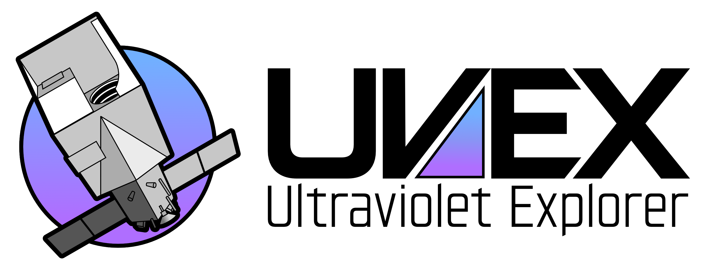
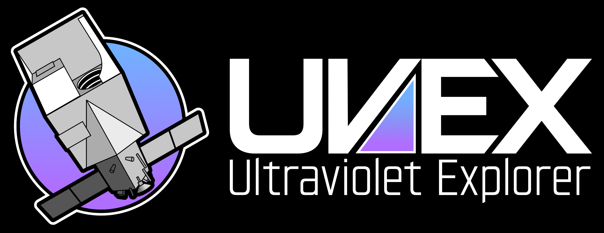

API#
This page provides the complete reference for all public classes, functions, and modules in the UVEX Transients codebase.
Models#
Spectral and light-curve models for individual transient classes, built on a common
core SED framework.
Spectral modeling infrastructure for generating synthetic photometry. |
Transients#
Transient population classes, pairing a model with the rate/metadata needed to run a Monte Carlo survey simulation.
Transient population base classes composing a TransientSED with rate/metadata. |
Simulation#
Monte Carlo sampling of transient populations against a survey schedule.
Monte Carlo simulation of transient detectability against a survey schedule. |
Phase Space#
Maps of the survey’s recovery of a transient over the plane of two of its properties (the canonical transient
over peak luminosity and half-decline time, a shock breakout over its luminosity and time scale), made by a
Sampler that counts the detections at a point and a Gaussian
process that places the next one.
Map the survey's recovery of a canonical transient over peak luminosity and half-decline time. |
Surveys#
Representation and validation of survey schedules.
Survey schedule representation, validation, and I/O. |
Missions#
Mission lookup, including uvex_fast: the UVEX mission with its bandpass tables downsampled so
band-integrated quantities are much cheaper, to within a stated magnitude tolerance for thermal
spectra. Controlled by the missions.downsample section of the configuration.
Missions, including bandpass-downsampled "fast" variants of m4opt missions. |
Command-Line Interface#
The uvex-transients console script: a YAML-driven wrapper around
uvex_transients.simulation.
Command-line interface for uvex_transients. |
Utilities#
Milky Way foreground dust extinction. |
|
Package-wide configuration, logging, and random-number-generation helpers. |